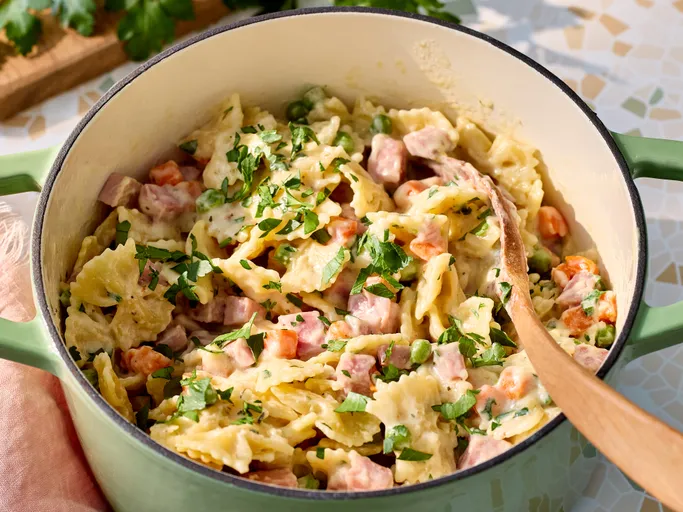
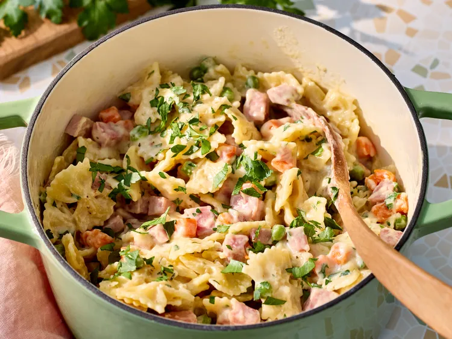

Esta comida de una sola olla es la manera perfecta de aprovechar las sobras de jamón para una cena entre semana. Es cremosa, reconfortante y fácil de preparar.
Calienta aceite de oliva en una olla grande a fuego medio. Agrega el jamón y la
cebolla; sofríe durante unos 3 minutos. Añade el ajo y cocina hasta que esté
fragante, aproximadamente 30 segundos. Incorpora las especias italianas, las
hojuelas de pimiento rojo, la sal y la pimienta; cocina durante 2 minutos.
En un bol, mezcla el caldo de pollo, la nata líquida y la harina hasta obtener una
mezcla homogénea; vierte la mezcla en la olla. Añade la pasta farfalle, tapa y
cocina durante 15 minutos.
Agrega los guisantes y las zanahorias. Cocina hasta que la pasta esté al dente,
aproximadamente 8 minutos más. Incorpora el queso parmesano y decora con
perejil picado. Sirve inmediatamente.
